SCARA Dual Parallel Arm Robot


The Project
I’ve been interested in robotics since middle school, and recently I’ve developed a strong interest in inverse kinematics—the idea of giving a robot a coordinate in space and using math to determine the exact joint angles needed to place the end effector at that point. I was first introduced to SCARA robots through a mechanical trades handbook my dad gave me. While browsing through it and reading about different machines, I came across a section on robotics, and one type immediately caught my attention: the SCARA robot. SCARA stands for Selective Compliance Assembly Robot Arm, and what intrigued me most is that it operates primarily in a two-dimensional plane. That simplicity made it feel like the perfect platform for learning and experimenting with inverse kinematics (IK).
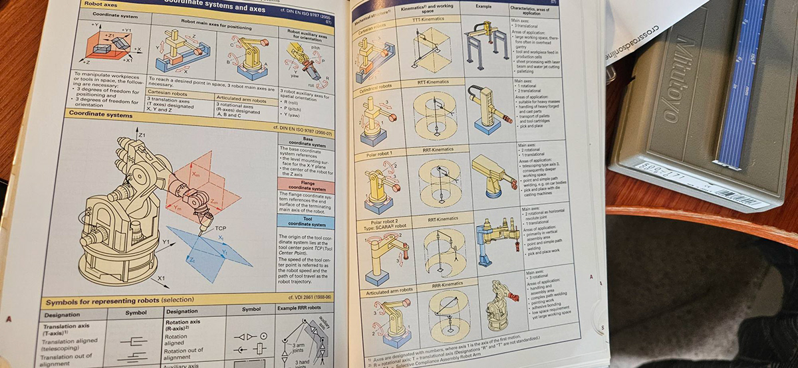
The Proposal
The plan was to design and build a dual-arm parallel SCARA robot from scratch, with the goal of turning it into a pen
plotter capable of drawing or writing using inverse kinematics. One of my main objectives was to learn how to take a
machine from concept to completion, combining the skills I’ve gained in school with the practices I’ve learned so
far during my internships.
This project allowed me to bring together mechanical and electrical design into a single finished system. 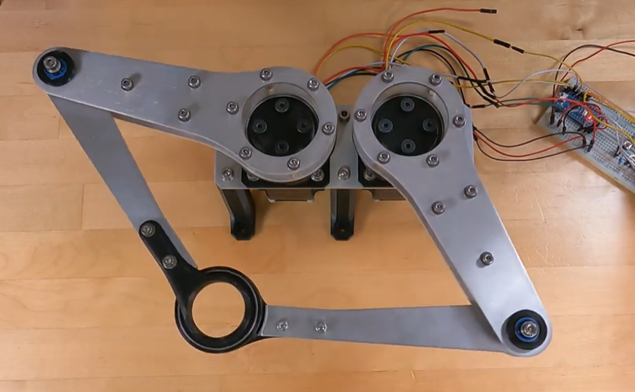
The Process
As with all good projects it started in CAD. i used Soildworks to design out the full robot and after a few redesigns i ended up with a aluminum extrusion frame with the arms mounted from above and a drawing zone underneath. I uses 2 stepper motors that are belt driven to move the arms there is a small servo at the end to lift and lower the pen.
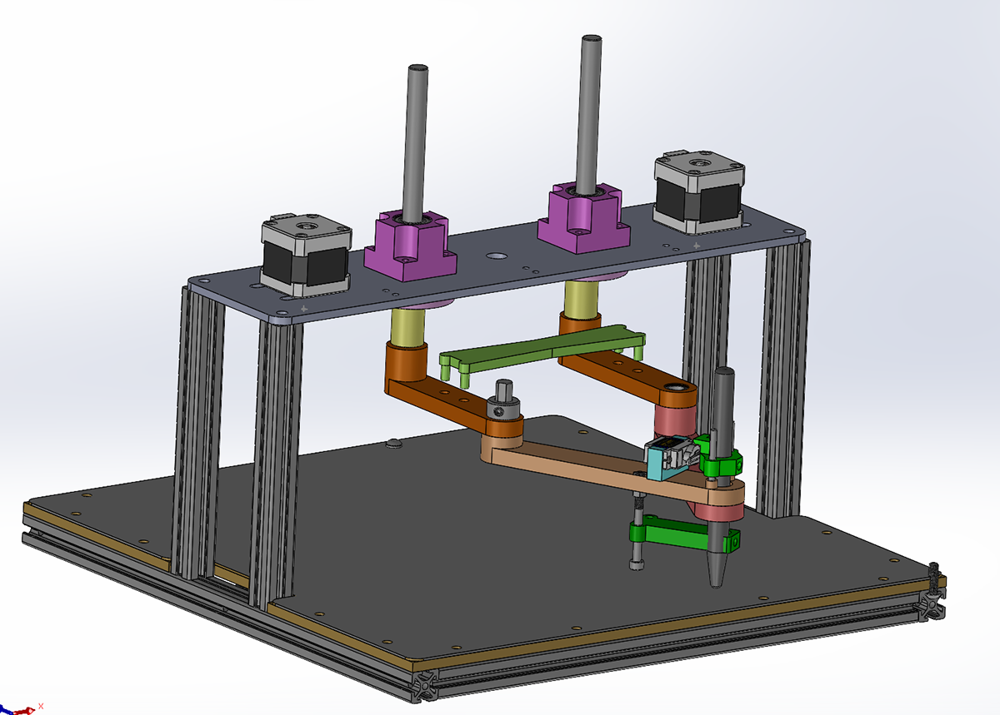
After completing the CAD design, I planned the electrical system using an online tool called Cirkit Designer. The main control logic is handled by a Teensy 4.0 microcontroller, which drives two TMC2209 stepper motor drivers. The system is powered by a 24 V power supply, with a regulated 5 V rail split off to supply the control logic. An emergency stop (E-stop) is wired to cut power to the motors while keeping the 5 V supply to the microcontroller active. This allows the system to remain powered for diagnostics and feedback even when the motors are disabled.
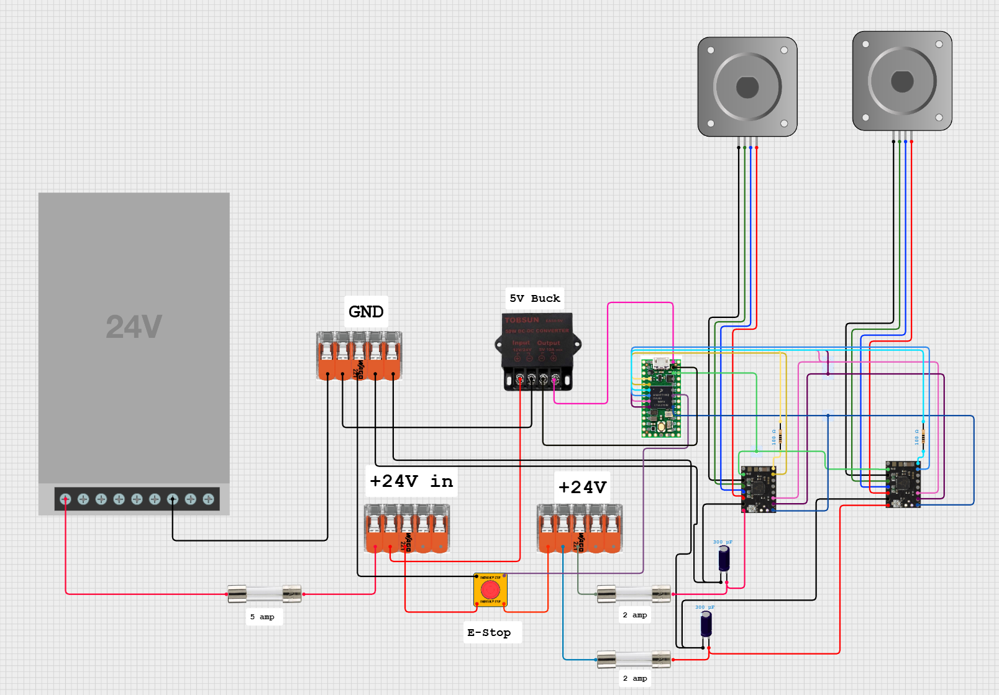
Once the design was finalized and a bill of materials was created (see BOM at the bottom of the page), I began the build process. I started with the electronics by testing the stepper motor driver circuits with the Teensy microcontroller. This phase was challenging at first, as learning how to properly configure and use the motor drivers took several attempts, and I damaged a few drivers early on. However, through trial, research, and testing, I eventually learned how to use them safely and reliably. One of the most important steps was learning how to set the adjustable potentiometer on the driver to control the maximum motor current. This required calculating the correct current limit using the driver’s formula and measuring the reference voltage (Vref) on the TMC2209. Properly setting Vref was critical to protecting both the drivers and the stepper motors.
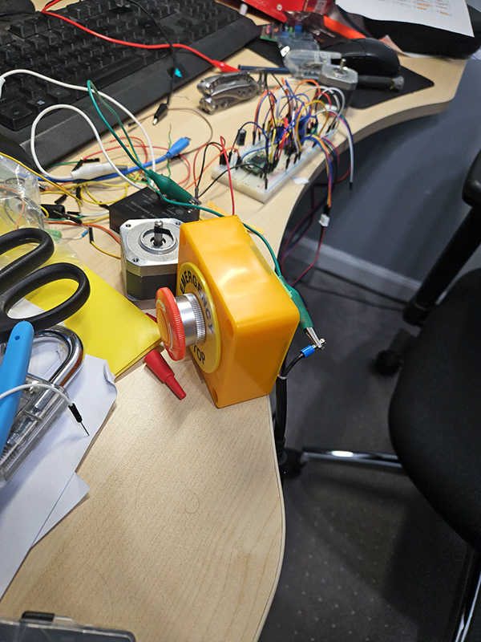
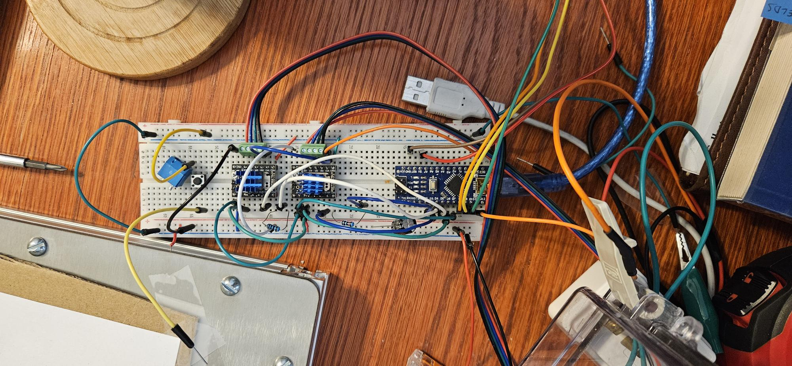
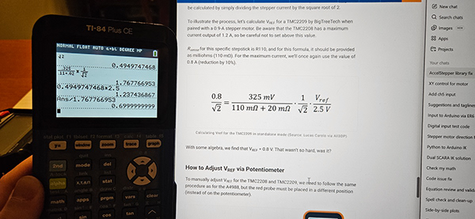
With the electronics working, it was finally time to move on to the fun part: building the frame and assembling the robot! I cut the aluminum extrusion to rough length using a band saw, then used the manual mill to precisely square the ends and drill the required holes for mounting and tightening the bolts. Next I used the taping machine to tap the ends of the bars. I then water-jet cut the base and top plates and assembled the frame, creating a rigid structure to support the rest of the robot.
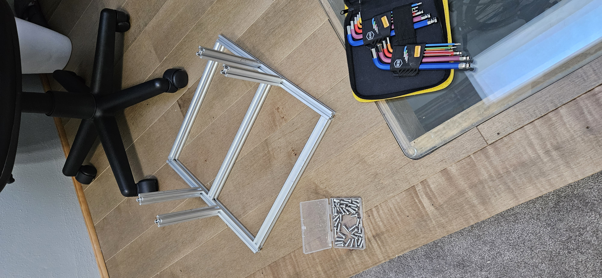
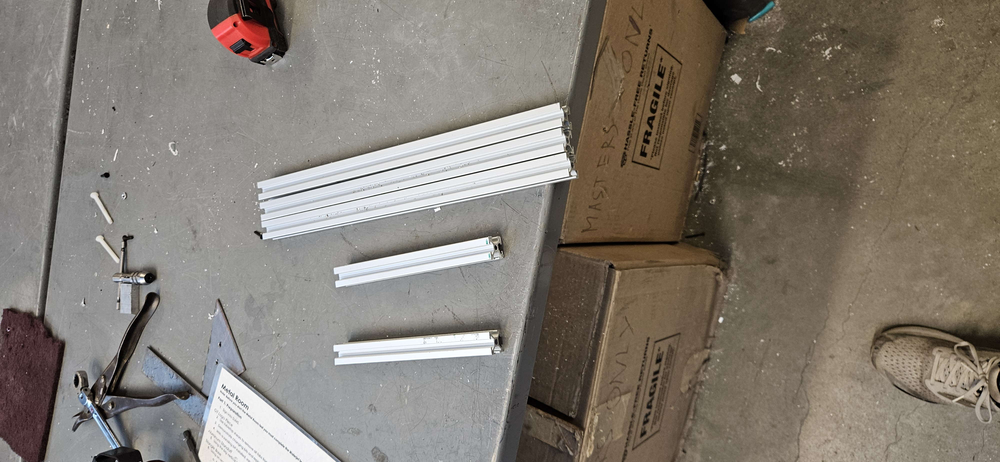
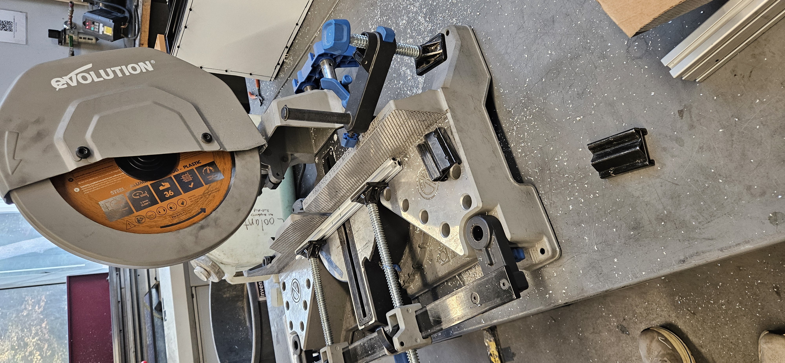
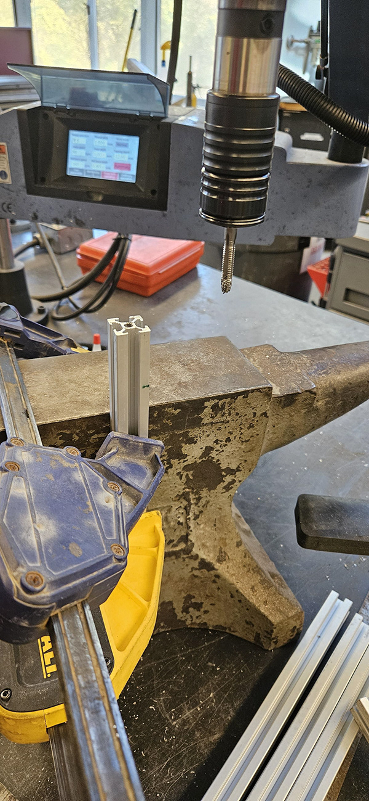
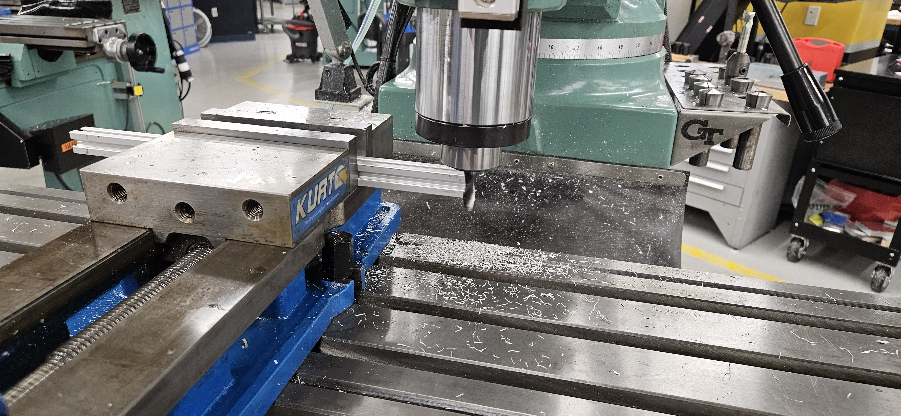
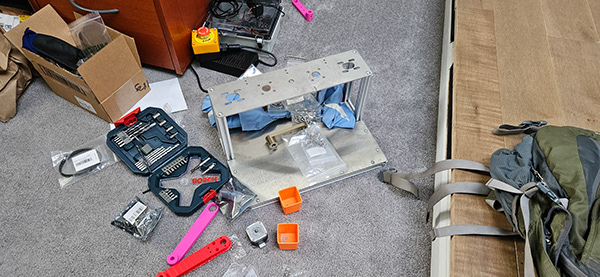
The Drive Train was next. And went the smoothest of all other parts of the project. The pullies and belts fit perfectly and the shaft collars and all secured it nicely
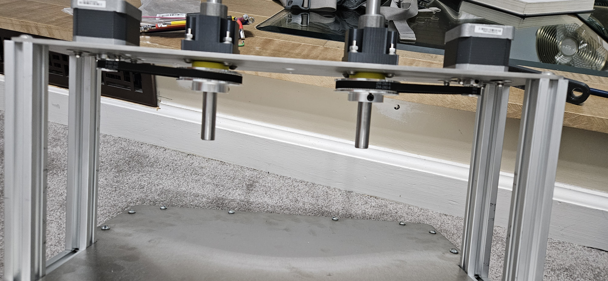
The final mechanical components were the 3D-printed arms. Although simple in design, they required extensive test printing to achieve the correct tolerances for proper fit and smooth movement. More than 20 different arm prints were produced before the final version was reached. In the end, the finished arms fit together correctly and glide smoothly during operation.
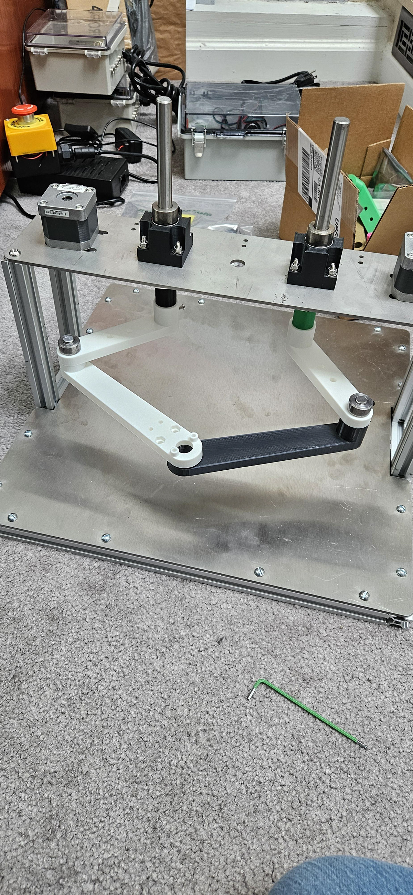
The pen mechanism was a partial failure in this project due to design limitations. It was originally designed around a cam shaft connected to a set-screw collar, which raised and lowered the pen carriage. A second attachment point below the carriage was intended to stabilize the pen and included springs to provide downward pressure on the paper during writing. While this mechanism worked in theory, practical constraints required the pen assembly to be moved farther back on the arm to allow the two SCARA arms to pass over each other during operation. This change increased the moment about the sliding points, introducing enough friction that the carriage could no longer move freely up and down. As a result, the mechanism had to be abandoned. In its current form, the pen is only supported at a single point, which introduces a slight wobble. Additionally, the springs are no longer able to provide sufficient downward force, making it more difficult to maintain consistent contact with the drawing surface.
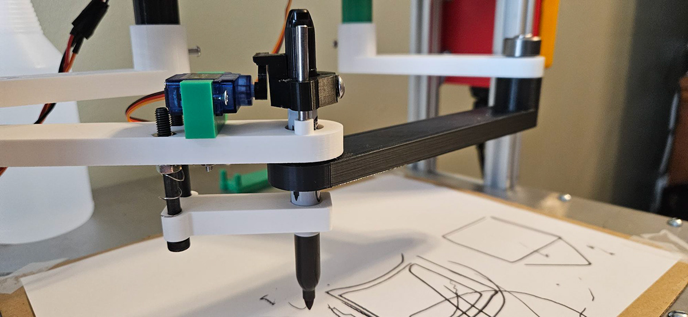
Another failure point occurred on the electrical side of the project. I had designed a custom PCB to integrate the Teensy 4.0 and the motor control circuitry into a compact, clean package. Unfortunately, during testing, the Teensy 4.0 was damaged, which forced me to switch to an Arduino Nano on a breadboard for the remainder of the project. Because of this change, the custom PCB could no longer be used. While the Arduino Nano functioned reliably, its slower processor limited overall system performance. In particular, it could not reliably handle the higher microstepping settings supported by the TMC2209 drivers, resulting in more jittery motor motion compared to the original design.
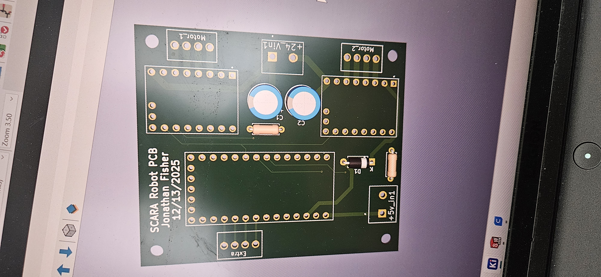
Despite these setbacks, the robot reached a workable final state, and the last major step was programming the inverse kinematics. I began by analyzing the geometry of the robot and deriving the forward kinematics equations, expressing the end-effector position in terms of the joint angles. From there, I derived the inverse kinematics equations needed to compute the joint angles from a desired (x,y) position. I first implemented and tested the equations in Python, with the help of ChatGPT, as a proof of concept before porting them to Arduino. Starting with forward kinematics proved especially valuable, as it allowed me to correctly define the reference frame of the physical robot. Without this step, the kinematic math did not behave as expected. After adding the inverse kinematics formulas and making several adjustments, the system successfully produced correct motion.
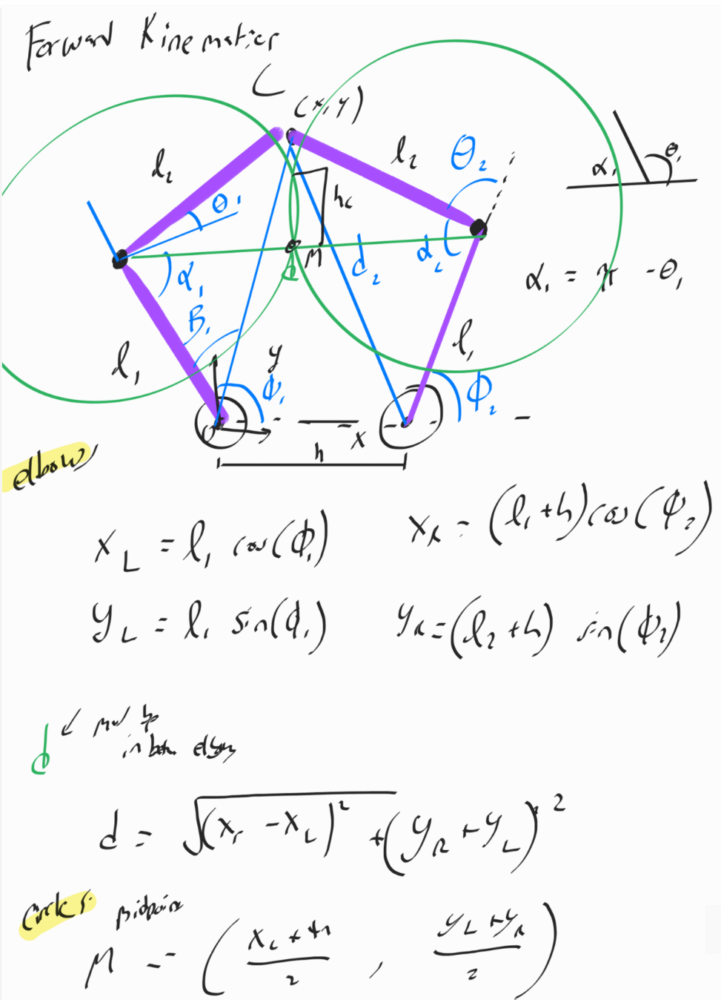
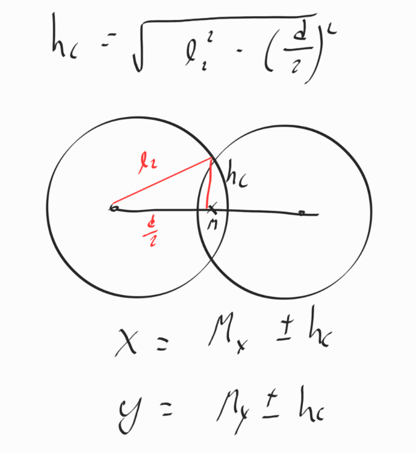
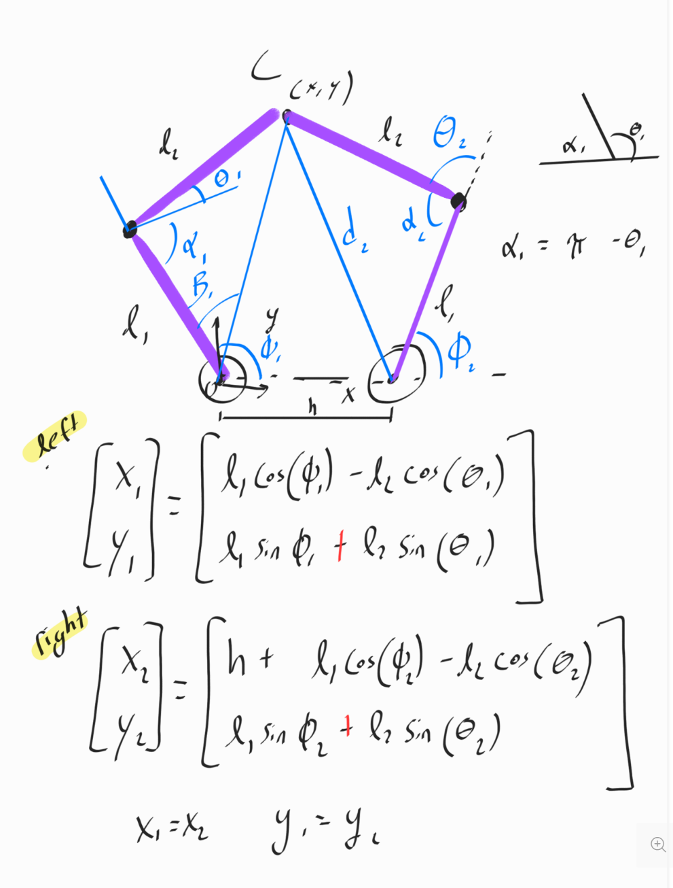
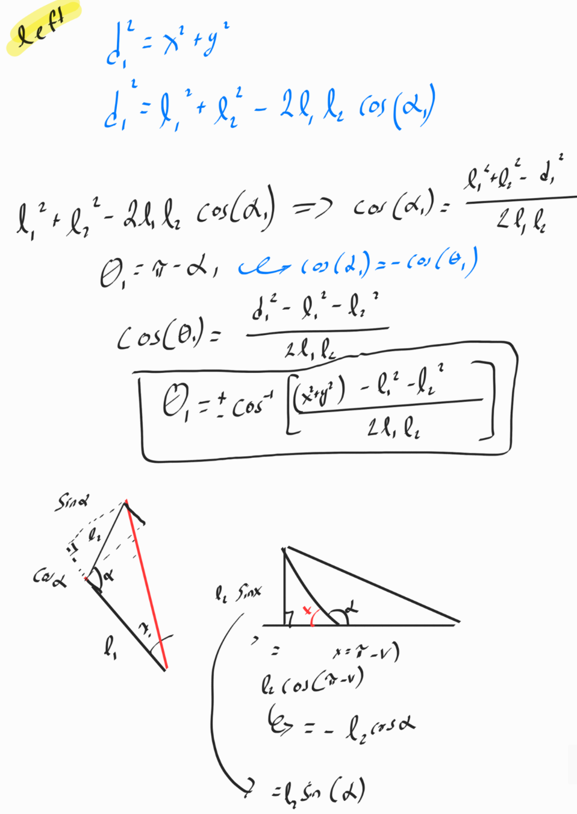
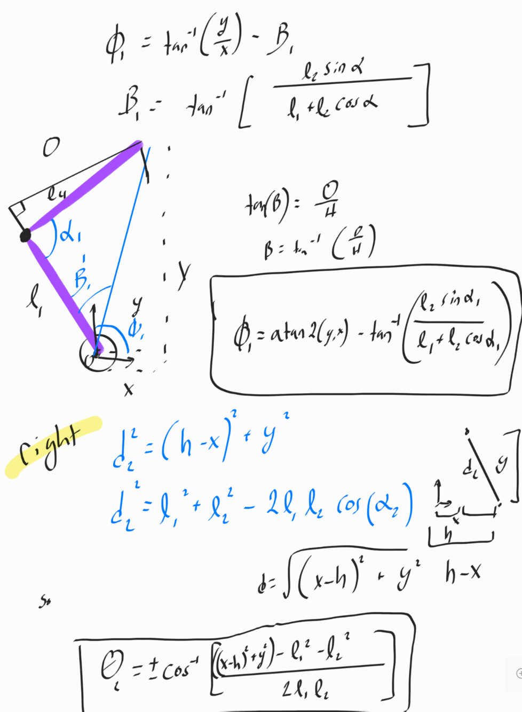
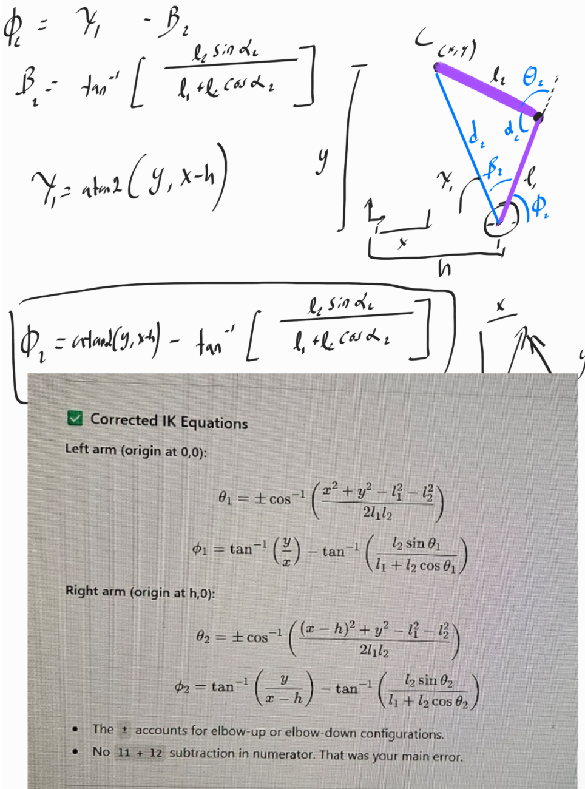
The Product
The Possible
If I were to do this project again, I would probably machine the arms out of metal instead of 3D printing, since I ran into problems getting the set screws to work with heat inserts. I’d also spend more time refining the software to make it run more smoothly. One challenge was that I hadn’t budgeted enough for electronics, so I was cautious about burning out drivers and microcontrollers, which meant I stopped once it reached a functional state. For future builds, I’d start with an Arduino Nano for prototyping and then move to a Teensy when I needed more processing speed. I’d also redesign the pen mechanism to make it more robust and eliminate the need for spring support. Overall, I’m really happy with how the project turned out. I learned a lot and am very proud of the finished product! Thank you to the Invention Studio for allowing me the opportunity to create this project I'm truly so grateful
Funded and supported by the Invention Studio at Georgia Tech, a student organization.
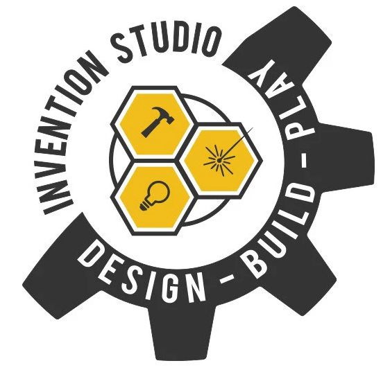